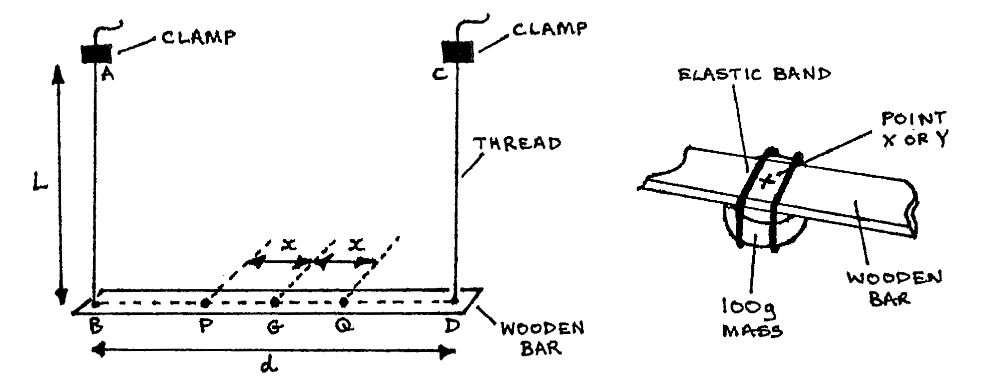

84-Q1: Moment of Inertia of a Bar¶
Time: \(1 \frac{1}{2}\) hr.
Apparatus¶
Bifilar pendulum (Wooden bar or metre rule with holes 0.5cm from ends); 2 threads (\(\sim\) 1.2m long); 2 \(\times\) 100g masses (flat bottom to strap to bar); 2 elastic bands; metre rule; stopclock; 2 clamps & stands; 2 G-clamps; piece of chalk; 1 sheet graph paper; (optional: spirit level).

The aim of this experiment is to determine the moment of inertia, \(I\), of a wooden bar acting as a bifilar pendulum. Proceed as follows:
Determine the centre of mass \(G\) of the wooden bar, and draw the horizontal axis of the bar (from \(B\), through \(G\), to \(D\)).
Using the pieces of thread provided, suspend the wooden bar as shown above, such that \(L = d = CD \approx 100\)cm. Measure and record \(L\) and \(d\). (2 marks)
Make adjustments so that the bar is horizontal.
Measure distance \(x = 5\)cm from each side of \(G\) to the variable positions \(P\) and \(Q\) as shown above.
Place the 100g masses at positions \(P\) and \(Q\) simultaneously. Set the wooden bar oscillating about a vertical axis through \(G\). Record the time \(t\) for 10 complete oscillations and calculate the correspondinb periodic time \(T\). (2 marks)
Move the 100g masses along the wooden bar at increasing distance \(x\) in intervals of 5cm from each side of \(G\). At each stage, measure the time \(t\) for 10 complete oscillations and determine the corresponding periodic time \(T\). Tabulate your results. (10 marks)
Plot a graph of \(T^2\) (vertical axis) against \(x^2\) (horizontal axis). (marks: table 3, graph 12)
Given that:
\[T^2 = \frac{16 \pi ^2 I L}{(M + m) g d^2} + \frac{16 \pi ^2 m L x^2}{(M + m) g d^2}\]Use your graph to determine \(I\) and \(M\); where \(L\) and \(d\) are expressed in SI units. \(g=9.81\) ms\(^{-2}\). \(m=0.2\)kg. What does \(M\) represent? (marks: use of graph 5, \(I \text{ and } M\) 10, \(M\) represents? 2)
Mention any precautions that you took in performing this experiment. (4 marks)